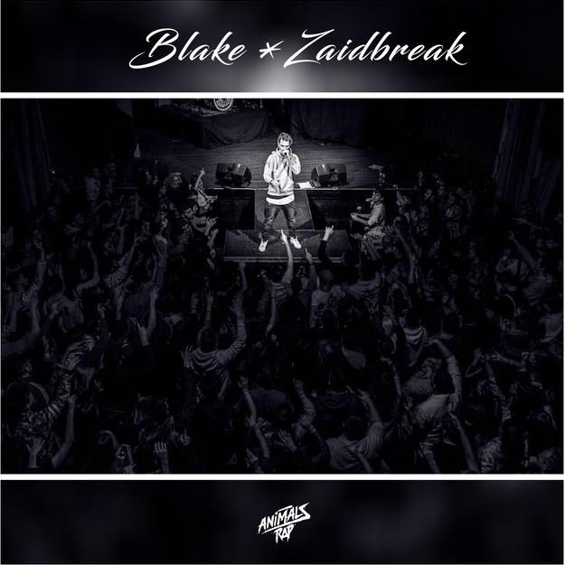

Tiro con Arco
Actualmente miembro del club de Arqueros de San Martin del Rey Aurelio. Durante 5 años lo había dejado apartado a causa de los estudios, sin embargo este año he vuelto a practicar un poco, no para competir sino como una aficion. En el 2015 fuí tercero en el campeonato de España en la modalidad de Arco Compuesto en la categoría Junior
Música

Videojuegos